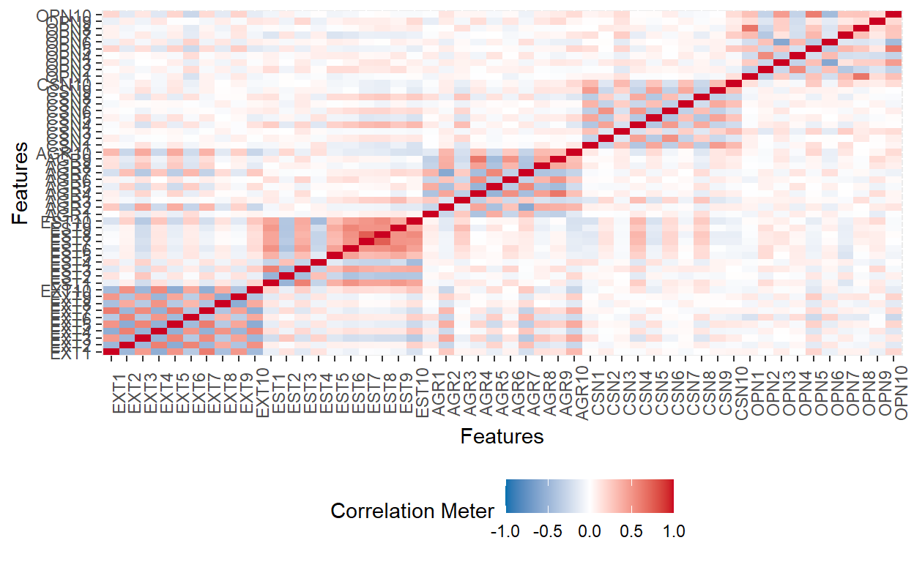
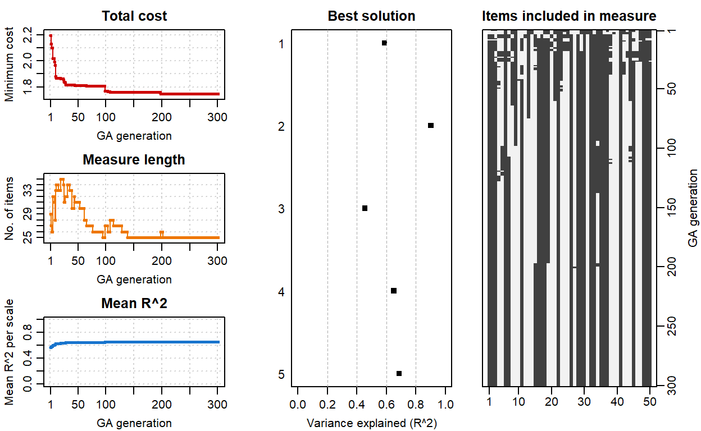

In this post, I will use Genetic Algorithm and Ant Colony Optimization Algorithm to automatically shorten the length of a test.
(8 min read)
Hi, Everyone. It’s been really hot here in Summer. I have some more time before my next school year (2023) begins. As I learned more about Psychometric, I came to know about techniques that can be used to reduce the number of questions in a questionnaire for efficiency. This post was inspired by my supervisor’s post of the same technique. He applied the data to the Experiences in Close Relationships (ECR) scale of Adult Romantic Attachment Measure (Brennan et al., 1998). I want to try following his footstep and replicate the same techniques to a different data set for my practice. In this post, I will use Genetic Algorithm and Ant Colony Optimization Algorithm to automatically shorten the length of a test.
We will be using the International Personality Item Pool data set (Goldberg et al., 2006). The data set has polytomous test items; that is, answers from test takers can be more than two values. Instead of “right” and “wrong”, the answer can be “strongly disagree”, “disagree”, “neutral”, “agree”, and “strongly agree”. The test measures person’s characteristics of extraversion, emotional stability, agreeableness, conscientiousness, and openness to experience.
First, we will import the data set and subset a portion of the data for feasibility. The full data set has 176,380 cases. We will subset only 5000 of them.
df_survey <- df[1:5000, 1:50]
head(df_survey)
EXT1 EXT2 EXT3 EXT4 EXT5 EXT6 EXT7 EXT8 EXT9 EXT10 EST1 EST2 EST3
1: 4 1 5 2 5 1 5 2 4 1 1 4 4
2: 3 5 3 4 3 3 2 5 1 5 2 3 4
3: 2 3 4 4 3 2 1 3 2 5 4 4 4
4: 2 2 2 3 4 2 2 4 1 4 3 3 3
5: 3 3 3 3 5 3 3 5 3 4 1 5 5
6: 3 3 4 2 4 2 2 3 3 4 3 4 3
EST4 EST5 EST6 EST7 EST8 EST9 EST10 AGR1 AGR2 AGR3 AGR4 AGR5 AGR6
1: 2 2 2 2 2 3 2 2 5 2 4 2 3
2: 1 3 1 2 1 3 1 1 4 1 5 1 5
3: 2 2 2 2 2 1 3 1 4 1 4 2 4
4: 2 3 2 2 2 4 3 2 4 3 4 2 4
5: 3 1 1 1 1 3 2 1 5 1 5 1 3
6: 2 2 1 2 1 2 2 2 3 1 4 2 3
AGR7 AGR8 AGR9 AGR10 CSN1 CSN2 CSN3 CSN4 CSN5 CSN6 CSN7 CSN8 CSN9
1: 2 4 3 4 3 4 3 2 2 4 4 2 4
2: 3 4 5 3 3 2 5 3 3 1 3 3 5
3: 1 4 4 3 4 2 2 2 3 3 4 2 4
4: 2 4 3 4 2 4 4 4 1 2 2 3 1
5: 1 5 5 3 5 1 5 1 3 1 5 1 5
6: 2 3 4 4 3 2 4 1 3 2 4 3 4
CSN10 OPN1 OPN2 OPN3 OPN4 OPN5 OPN6 OPN7 OPN8 OPN9 OPN10
1: 4 5 1 4 1 4 1 5 3 4 5
2: 3 1 2 4 2 3 1 4 2 5 3
3: 2 5 1 2 1 4 2 5 3 4 4
4: 4 4 2 5 2 3 1 4 4 3 3
5: 5 5 1 5 1 5 1 5 3 5 5
6: 3 5 1 5 1 3 1 5 4 5 2DataExplorer::plot_correlation(df_survey)

alpha function in psych package can be
used to examine how much reliability the test will have after dropping
some items.alpha <- psych::alpha(df_survey, check.keys=TRUE)
alpha$alpha.drop
raw_alpha std.alpha G6(smc) average_r S/N alpha se
EXT1- 0.8696207 0.8679394 0.9137837 0.1182655 6.572282 0.002611411
EXT2 0.8691535 0.8675726 0.9134115 0.1179326 6.551309 0.002621739
EXT3- 0.8668282 0.8651111 0.9121684 0.1157390 6.413506 0.002671484
EXT4 0.8683708 0.8667878 0.9129267 0.1172256 6.506819 0.002638125
EXT5- 0.8673617 0.8656936 0.9123513 0.1162518 6.445660 0.002659426
EXT6 0.8685602 0.8667696 0.9132939 0.1172093 6.505797 0.002632815
EXT7- 0.8682855 0.8668348 0.9129689 0.1172677 6.509470 0.002640926
EXT8 0.8712934 0.8695949 0.9150056 0.1197881 6.668412 0.002577510
EXT9- 0.8704641 0.8687061 0.9143138 0.1189665 6.616502 0.002593862
EXT10 0.8683898 0.8669061 0.9133637 0.1173317 6.513491 0.002638721
EST1 0.8703855 0.8687731 0.9141121 0.1190281 6.620390 0.002594302
EST2- 0.8715179 0.8698555 0.9152856 0.1200308 6.683770 0.002572223
EST3 0.8713890 0.8698611 0.9149559 0.1200360 6.684096 0.002575067
EST4- 0.8722369 0.8705305 0.9161060 0.1206634 6.723826 0.002558568
EST5 0.8712487 0.8695326 0.9155456 0.1197302 6.664750 0.002576908
EST6 0.8697921 0.8682577 0.9140230 0.1185557 6.590577 0.002606440
EST7 0.8698114 0.8682822 0.9134175 0.1185780 6.591988 0.002605601
EST8 0.8695089 0.8680298 0.9130377 0.1183477 6.577465 0.002612008
EST9 0.8692737 0.8677100 0.9136737 0.1180571 6.559153 0.002617047
EST10 0.8680675 0.8667208 0.9130501 0.1171656 6.503046 0.002644521
AGR1 0.8729617 0.8708241 0.9162004 0.1209403 6.741382 0.002540781
AGR2- 0.8696206 0.8674465 0.9136713 0.1178184 6.544122 0.002609287
AGR3 0.8720020 0.8701186 0.9156558 0.1202767 6.699333 0.002559864
AGR4- 0.8718810 0.8699519 0.9145632 0.1201208 6.689461 0.002561684
AGR5 0.8713817 0.8694433 0.9147959 0.1196472 6.659506 0.002572622
AGR6- 0.8740795 0.8722052 0.9166081 0.1222577 6.825042 0.002520054
AGR7 0.8695310 0.8674391 0.9132795 0.1178118 6.543703 0.002610839
AGR8- 0.8712084 0.8692263 0.9151725 0.1194462 6.646796 0.002576807
AGR9- 0.8719947 0.8700279 0.9149316 0.1201919 6.693960 0.002559508
AGR10- 0.8692295 0.8669770 0.9138922 0.1173954 6.517496 0.002617962
CSN1- 0.8715010 0.8696873 0.9151554 0.1198740 6.673849 0.002569307
CSN2 0.8743915 0.8722266 0.9165440 0.1222783 6.826354 0.002512017
CSN3- 0.8729250 0.8712122 0.9165431 0.1213081 6.764712 0.002542491
CSN4 0.8695425 0.8679183 0.9139521 0.1182463 6.571073 0.002609660
CSN5- 0.8713024 0.8695137 0.9151010 0.1197126 6.663639 0.002573481
CSN6 0.8723390 0.8703796 0.9153758 0.1205215 6.714834 0.002551467
CSN7- 0.8739940 0.8724664 0.9170480 0.1225097 6.841070 0.002522233
CSN8 0.8704663 0.8686382 0.9148756 0.1189042 6.612566 0.002591175
CSN9- 0.8724726 0.8705899 0.9156435 0.1207194 6.727375 0.002550163
CSN10- 0.8718644 0.8699681 0.9157181 0.1201359 6.690420 0.002563072
OPN1- 0.8731489 0.8713227 0.9152167 0.1214131 6.771378 0.002536994
OPN2 0.8723907 0.8704576 0.9152106 0.1205948 6.719479 0.002551733
OPN3- 0.8742745 0.8725471 0.9161203 0.1225876 6.846034 0.002516526
OPN4 0.8733534 0.8715435 0.9160396 0.1216236 6.784738 0.002533974
OPN5- 0.8710467 0.8687933 0.9141883 0.1190467 6.621561 0.002579241
OPN6 0.8723086 0.8703180 0.9150081 0.1204637 6.711173 0.002553227
OPN7- 0.8718728 0.8699217 0.9156417 0.1200926 6.687679 0.002563265
OPN8- 0.8752372 0.8730645 0.9163104 0.1230898 6.878014 0.002497109
OPN9 0.8760793 0.8755095 0.9191497 0.1255113 7.032742 0.002491151
OPN10- 0.8716998 0.8695968 0.9144305 0.1197899 6.668526 0.002565750
var.r med.r
EXT1- 0.02247896 0.08151262
EXT2 0.02242356 0.08166635
EXT3- 0.02239961 0.07907977
EXT4 0.02233050 0.08041782
EXT5- 0.02230091 0.07914325
EXT6 0.02288756 0.07930301
EXT7- 0.02235567 0.08146699
EXT8 0.02281218 0.08201026
EXT9- 0.02271017 0.08153477
EXT10 0.02258192 0.08041782
EST1 0.02257745 0.08146699
EST2- 0.02293955 0.08210536
EST3 0.02261406 0.08151262
EST4- 0.02326988 0.08180150
EST5 0.02327337 0.08157208
EST6 0.02262279 0.08082590
EST7 0.02258286 0.08146699
EST8 0.02248911 0.08132409
EST9 0.02280470 0.08041782
EST10 0.02268410 0.08002237
AGR1 0.02320503 0.08201026
AGR2- 0.02287127 0.08108114
AGR3 0.02323923 0.08151262
AGR4- 0.02249784 0.08225522
AGR5 0.02279661 0.08201026
AGR6- 0.02261039 0.08321513
AGR7 0.02275238 0.08092384
AGR8- 0.02309551 0.08162526
AGR9- 0.02265465 0.08180150
AGR10- 0.02322872 0.07874079
CSN1- 0.02314059 0.08166635
CSN2 0.02285444 0.08249577
CSN3- 0.02337612 0.08195375
CSN4 0.02299208 0.08082590
CSN5- 0.02315868 0.08157208
CSN6 0.02302597 0.08225522
CSN7- 0.02294173 0.08385676
CSN8 0.02335693 0.07998131
CSN9- 0.02305508 0.08195375
CSN10- 0.02344565 0.08162526
OPN1- 0.02302069 0.08295971
OPN2 0.02315918 0.08201026
OPN3- 0.02266237 0.08249577
OPN4 0.02310353 0.08225522
OPN5- 0.02321234 0.08082590
OPN6 0.02315973 0.08201026
OPN7- 0.02343876 0.08146699
OPN8- 0.02269568 0.08336518
OPN9 0.02248538 0.08407870
OPN10- 0.02292938 0.08162526summary(alpha)
Reliability analysis
raw_alpha std.alpha G6(smc) average_r S/N ase mean sd median_r
0.87 0.87 0.92 0.12 6.8 0.0025 2.7 0.44 0.082Another way we can reduce the number of items is through the use of Genetic Algorithm, which is an optimization method inspired from the natural selection theory (Schroeders et al., 2016). This is how it works:
First, the algorithm randomly selects several item sets from the item pool. These item sets act as parents.
Second, the algorithm picks items from each parent to form several sets of items as children (or an offspring).
Third, some items in the children set were exchanged with items from the item pool as a mutation.
Fourth, the children were evaluated. Children who produce better results were kept while those that did not do well are discarded. The process continues until a certain criterion is met.
Figure 1 below from visualizes how the process is done.
GAabbreviate package to perform test
abbreviation with the Genetic Algorithm (Sahdra
et al., 2016). To prepare the data, we will first create summations
of scores in each domain for every examinee as the scale score. We will
also transform the data frame into a matrix.library(GAabbreviate)
scales = cbind(rowSums(df_survey[, 1:10]),
rowSums(df_survey[, 11:20]),
rowSums(df_survey[, 21:30]),
rowSums(df_survey[, 31:40]),
rowSums(df_survey[, 41:50]))
df_survey <- as.data.frame(sapply(df_survey, as.integer))
df_survey <- matrix(as.integer(unlist(df_survey)), nrow=nrow(df_survey))
GAabbreviate function (Sahdra
et al, 2016). We will set the cost of each item to 0.001 so that the
algorithm can produce results that explains the most variance (Yarkoni,
2010).ipip_ga <- GAabbreviate(items = df_survey, # Matrix of item responses
verbose = FALSE,
scales = scales, # Scale scores
itemCost = 0.001, # The cost of each item
maxItems = 5, # Max number of items per dimension
maxiter = 1000, # Max number of iterations
run = 100, # Number of runs
crossVal = TRUE, # Cross-validation
seed = RANDOM_STATE) # Seed for reproducibility
summary(ipip_ga)
── Genetic Algorithm ───────────────────
GA settings:
Type = binary
Population size = 50
Number of generations = 1000
Elitism = 2
Crossover probability = 0.8
Mutation probability = 0.1
GA results:
Iterations = 301
Total cost = 1.74582
Number of items in initial set = 50
Number of items in final set = 25
Mean coefficient alpha = 0.3212
Mean convergent correlation (training) = 0.8069
Mean convergent correlation (validation) = 0.8029ipip_ga$measure$alpha
A1 A2 A3 A4 A5
alpha -0.2131873 0.8071732 0.7320936 -0.3923633 0.6721945x1 x2 x3 x6 x7
1 2 3 6 7 ipip_ga$measure$items[est]
x11 x15 x16 x17 x18
11 15 16 17 18 ipip_ga$measure$items[agr]
x22 x26 x28 x29 x30
22 26 28 29 30 ipip_ga$measure$items[csn]
x32 x33 x35 x36 x37
32 33 35 36 37 ipip_ga$measure$items[opn]
x41 x45 x48 x49 x50
41 45 48 49 50 plot(ipip_ga)

One more way we can shorten our test is using the Ant Colony Optimization (ACO) algorithm. ACO is an optimization method inspired from the foraging behavior of Argentine ants by using virtual ants to find the shortest path to a destination, which is the optimal set of test items for our case (Doringo et al., 2006).
See Figure 2 below for the visual illustration of ACO. There are two routes that lead to the same food source. As ants travel randomly to the food source, they all leave pheromone for others to follow them.
However, given that the upper route is shorter, it receives more pheromone as ants travel back and forth from their nest to the food source more often. The route with more pheromone (i.e., the shorter route) is chosen more by the ants while the longer route gets chosen less as the pheromone evaporates from having less ant.
Shortform package to perform test
abbreviation with ACO (Raborn
& Leite, 2020). We will load the package and subset the data for
feasibility. ACO is quite computationally expensive with a large data
set. To save time, I subsetted only the first 100 cases of IPIP response
data. ##### #######
# # # # #### ##### ##### # #### ##### # #
# # # # # # # # # # # # # ## ##
##### ###### # # # # # ##### # # # # # ## #
# # # # # ##### # # # # ##### # #
# # # # # # # # # # # # # # # #
##### # # #### # # # # #### # # # #
Version 0.4.6
(o<
//\
V_/_ df_survey_aco <- df[1:100, 1:50] #ACO uses dataframe format
lavaan syntax. Here, I defined five dimensions that are
measured by 10 items each. In addition to the measurement model, I will
also indicate the list of items that measure each dimension.model <- " ext =~ EXT1+EXT2+EXT3+EXT4+EXT5+EXT6+EXT7+EXT8+EXT9+EXT10
est =~ EST1+EST2+EST3+EST4+EST5+EST6+EST7+EST8+EST9+EST10
agr =~ AGR1+AGR2+AGR3+AGR4+AGR5+AGR6+AGR7+AGR8+AGR9+AGR10
csn =~ CSN1+CSN2+CSN3+CSN4+CSN5+CSN6+CSN7+CSN8+CSN9+CSN10
opn =~ OPN1+OPN2+OPN3+OPN4+OPN5+OPN6+OPN7+OPN8+OPN9+OPN10
"
items <- list(c(paste0("EXT", seq(1, 10))),
c(paste0("EST", seq(1, 10))),
c(paste0("AGR", seq(1, 10))),
c(paste0("CSN", seq(1, 10))),
c(paste0("OPN", seq(1, 10)))
)
items
[[1]]
[1] "EXT1" "EXT2" "EXT3" "EXT4" "EXT5" "EXT6" "EXT7" "EXT8"
[9] "EXT9" "EXT10"
[[2]]
[1] "EST1" "EST2" "EST3" "EST4" "EST5" "EST6" "EST7" "EST8"
[9] "EST9" "EST10"
[[3]]
[1] "AGR1" "AGR2" "AGR3" "AGR4" "AGR5" "AGR6" "AGR7" "AGR8"
[9] "AGR9" "AGR10"
[[4]]
[1] "CSN1" "CSN2" "CSN3" "CSN4" "CSN5" "CSN6" "CSN7" "CSN8"
[9] "CSN9" "CSN10"
[[5]]
[1] "OPN1" "OPN2" "OPN3" "OPN4" "OPN5" "OPN6" "OPN7" "OPN8"
[9] "OPN9" "OPN10"antcolony.lavaan
function. We will set the number of ants to 20, pheromone evaporation
rate to 0.5, and fit indices of comparative fit index (CFI),
Tucker-Lewis index (TLI), and root mean square error of approximation
(RMSEA).ipip_ACO <- antcolony.lavaan(data = df_survey_aco, # Response data set
ants = 20, # Number of ants
evaporation = 0.5, # % of the pheromone retained after evaporation
antModel = model, # Factor model for IPIP
list.items = items, # Items for each dimension
full = 50, # The total number of unique items in the IPIP scale
i.per.f = c(5, 5, 5, 5, 5), # The desired number of items per dimension. The number has to match the number of dimension
factors = c('EXT','EST','AGR','CSN','OPN'), # Names of dimensions
# lavaan settings - Change estimator to WLSMV
lavaan.model.specs = list(model.type = "cfa", auto.var = T, estimator = "WLSMV",
ordered = NULL, int.ov.free = TRUE, int.lv.free = FALSE,
auto.fix.first = TRUE, auto.fix.single = TRUE,
auto.cov.lv.x = TRUE, auto.th = TRUE, auto.delta = TRUE,
auto.cov.y = TRUE, std.lv = F),
steps = 50, # The number of ants in a row for which the model does not change
fit.indices = c('cfi', 'tli', 'rmsea'), # Fit statistics to use
fit.statistics.test = "(cfi > 0.95)&(tli > 0.95)&(rmsea < 0.06)",
max.run = 300) # The maximum number of ants to run before the algorithm stops
Run number 1.
Run number 2.
Run number 3.
Run number 4.
Run number 5.
Run number 6.
Run number 7.
Run number 8.
Run number 9.
Run number 10.
Run number 11.
Run number 12.
Run number 13.
Run number 14.
Run number 15.
Run number 16.
Run number 17.
Run number 18.
Run number 19.
Run number 20.
Run number 21. [1] "Compiling results."ipip_ACO[[1]]
cfi tli rmsea mean_gamma EXT1 EXT2 EXT3 EXT4
[1,] 0.968031 0.9638086 0.03537734 0.529 1 0 1 0
EXT5 EXT6 EXT7 EXT8 EXT9 EXT10 EST1 EST2 EST3 EST4 EST5 EST6
[1,] 1 0 1 0 1 0 0 0 1 0 1 1
EST7 EST8 EST9 EST10 AGR1 AGR2 AGR3 AGR4 AGR5 AGR6 AGR7 AGR8
[1,] 0 1 0 1 0 1 1 1 1 0 0 1
AGR9 AGR10 CSN1 CSN2 CSN3 CSN4 CSN5 CSN6 CSN7 CSN8 CSN9 CSN10
[1,] 0 0 1 1 0 0 1 0 0 0 1 1
OPN1 OPN2 OPN3 OPN4 OPN5 OPN6 OPN7 OPN8 OPN9 OPN10
[1,] 1 0 0 0 1 0 0 1 1 1ipip_ACO$best.model
lavaan 0.6-11 ended normally after 71 iterations
Estimator DWLS
Optimization method NLMINB
Number of model parameters 60
Number of observations 100
Model Test User Model:
Standard Robust
Test Statistic 283.962 324.326
Degrees of freedom 265 265
P-value (Chi-square) 0.202 0.007
Scaling correction factor 1.883
Shift parameter 173.490
simple second-order correction cat(ipip_ACO$best.syntax)
EXT =~ EXT7 + EXT3 + EXT5 + EXT1 + EXT9
EST =~ EST3 + EST10 + EST6 + EST8 + EST5
AGR =~ AGR8 + AGR4 + AGR3 + AGR2 + AGR7
CSN =~ CSN2 + CSN5 + CSN9 + CSN1 + CSN10
OPN =~ OPN5 + OPN8 + OPN1 + OPN9 + OPN10
raw_alpha std.alpha G6(smc) average_r S/N ase mean
0.8854019 0.886472 0.8729437 0.6096311 7.808396 0.01810261 3.038
sd median_r
1.032285 0.5956059 raw_alpha std.alpha G6(smc) average_r S/N ase mean
0.819672 0.8179554 0.816637 0.4733049 4.493158 0.02866376 2.962
sd median_r
0.9705544 0.4724666 raw_alpha std.alpha G6(smc) average_r S/N ase mean
0.7890755 0.788927 0.76396 0.4277669 3.737698 0.03327975 3.794
sd median_r
0.7776967 0.4230731 raw_alpha std.alpha G6(smc) average_r S/N ase mean
0.7009179 0.6928163 0.6664406 0.3108564 2.255382 0.04580886 3.284
sd median_r
0.7914595 0.2909734 raw_alpha std.alpha G6(smc) average_r S/N ase mean
0.5971511 0.6095035 0.5874082 0.2379028 1.560843 0.06264639 3.802
sd median_r
0.6006697 0.2483103This post demonstrated several ways we can reduce the number of test items whether through the traditional method of reliability examination, Genetic Algorithm, or ACO. Many psychological assessment provides helpful insights to clinicians, educators, and the examinee themselves with helpful information. However, some tests are quite lengthy that they fatigue the examinee out before; for example, the Minnesota Multiphasic Personality Inventory-2 Restructured Form (MMPI-2-RF) has 338 items. Genetic Algorithm and ACO may be useful to reduce the number of test items to the optimal level while retaining accuracy and representativeness of the test.
However, note that the two algorithms are not silver bullets. We cannot just apply them to every test without consulting the literature, test developers, test users, and other relevant stakeholders first. After reducing the number of test items, researchers should check if the remaining items are representative to the measured construct and perform a pilot testing to examine if the test serves its intended purpose. As always, thank you very much for reading this!
Text and figures are licensed under Creative Commons Attribution CC BY 4.0. The figures that have been reused from other sources don't fall under this license and can be recognized by a note in their caption: "Figure from ...".
For attribution, please cite this work as
Wongvorachan (2022, Aug. 14). Tarid Wongvorachan: Test Shortening with Genetic Algorithm and Ant Colony Optimization. Retrieved from https://taridwong.github.io/posts/2022-08-14-ga-aco/
BibTeX citation
@misc{wongvorachan2022test,
author = {Wongvorachan, Tarid},
title = {Tarid Wongvorachan: Test Shortening with Genetic Algorithm and Ant Colony Optimization},
url = {https://taridwong.github.io/posts/2022-08-14-ga-aco/},
year = {2022}
}